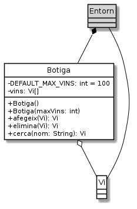

Exercici 05_02. La classe
Exercici 05_02. La classe botiga¶
Context
Carpeta de lliurament:
05_02_botiga/Continguts relacionats: El celler de la Bona Estrella
Com lliurar-lo: instruccions
[✓] Exercici amb autoavaluació
Enunciat
Un cop ja tenim la classe Vi és un bon moment per implementar la
classe Botiga.

La classe Botiga ens permetrà gestionar la col·lecció de vins de la
botiga de la Sra. Estrella.
Donat que necessitarem emmagatzemar vàries instàncies de Vi, en
aquesta primera versió farem servir un array de Vi.
Suposarem que la botiga tindrà un nombre màxim de vins. Aquest màxim pot
ser indicat amb el constructor específic, o bé pren el valor per defecte
indicat per la constant DEFAULT_MAX_VINS en cas que no sigui indicat o
que el valor indicat sigui menor que 1.
El mètode afegeix() ens permetrà afegir un nou vi a la col·lecció.
Per fer-ho, primer comprovarà que no hi hagi cap altre vi amb el mateix
nom a la col·lecció. Si troba un altre vi amb el mateix nom, no fa res i
retorna null.
Un cop comprovar que no hi ha cap altre vi amb el mateix nom, cercarà una
entrada de l’array que apunti a null, la ocuparà amb el nou vi i
retornarà el vi introduït com a senyal que tot ha anat bé.
En cas que no trobi cap espai buit, retornarà null per indicar que no
ha anat bé.
La funcionalitat més important de la botiga és la possibilitat
de cercar un vi. De moment només permetrà cercar pel nom.
cerca() rebrà un String que cercarà pels vins de la botiga fins a trobar
un que tingui aquest valor com a nom. En cas de trobar-lo, el retornarà.
Altrament retornarà null.
Caldrà normalitzar el nom del vi per cercar-lo.
El mètode elimina() ens permet eliminar un vi de la botiga. El mètode
rep una instància de Vi i intentarà trobar-la a la col·lecció. Si no
la troba, retorna null per indicar que no ha tingut èxit. Si el troba,
marcarà la seva posició a l’array com a null i retornarà la instància
del vi eliminat.
Atenció: no s’eliminarà cap vi del que quedi encara estoc. Així que si
el vi rebut té encara ampolles, aquest mètode fallarà i retornarà
null per indicar-ho.
Què haig de fer?¶
Implementa la classe Botiga.
Per provar la teva classe, considera UsaBotiga.java:
1 2 3 4 5 6 7 8 9 10 11 12 13 14 15 16 17 18 19 20 21 22 23 24 25 26 27 28 29 30 31 32 33 34 | /*
* Aquesta classe fa una comprovació ràpida del funcionament de la classe
* Botiga
*/
public class UsaBotiga {
public static void main(String[] args) {
final int QUANTS_VINS = 3;
System.out.println("Creem uns quants vins");
Vi[] vins = new Vi[QUANTS_VINS];
for (int i=0; i<QUANTS_VINS; i++) {
vins[i] = new Vi("Vi nr. " + i, 1000 + i * 100, 10 + i);
System.out.println("Creat" + vins[i]);
}
Botiga botiga = new Botiga(QUANTS_VINS - 1); // no hi cabran tots els vins
System.out.println("Afegim els vins creats a la botiga");
for (int i=0; i<QUANTS_VINS; i++) {
Vi resposta = botiga.afegeix(vins[i]);
System.out.println("En afegir" + vins[i] + "la botiga ens respon " + resposta);
}
System.out.printf("%nCerquem uns vins%n");
String nomVi = vins[1].getNom();
Vi resposta = botiga.cerca(nomVi);
System.out.println("En cercar " + nomVi + " botiga ens respon " + resposta);
nomVi = vins[QUANTS_VINS - 1].getNom();
resposta = botiga.cerca(nomVi);
System.out.println("En cercar " + nomVi + " botiga ens respon " + resposta);
}
}
|
En breu, UsaBotiga crea uns quants vins, crea una botiga que no té
espai per tants vins i li intenta afegir tots els vins creats. Finalment
cerca un dels vins que ha d’estar afegit correctament i un altre que no hi
cabia.
L’execució haurà de generar la següent sortida:
Creem uns quants vins
Creat
Vi: Vi nr. 0
Preu: 1000
Estoc: 10
Creat
Vi: Vi nr. 1
Preu: 1100
Estoc: 11
Creat
Vi: Vi nr. 2
Preu: 1200
Estoc: 12
Afegim els vins creats a la botiga
En afegir
Vi: Vi nr. 0
Preu: 1000
Estoc: 10
la botiga ens respon
Vi: Vi nr. 0
Preu: 1000
Estoc: 10
En afegir
Vi: Vi nr. 1
Preu: 1100
Estoc: 11
la botiga ens respon
Vi: Vi nr. 1
Preu: 1100
Estoc: 11
En afegir
Vi: Vi nr. 2
Preu: 1200
Estoc: 12
la botiga ens respon null
Cerquem uns vins
En cercar Vi nr. 1 botiga ens respon
Vi: Vi nr. 1
Preu: 1100
Estoc: 11
En cercar Vi nr. 2 botiga ens respon null